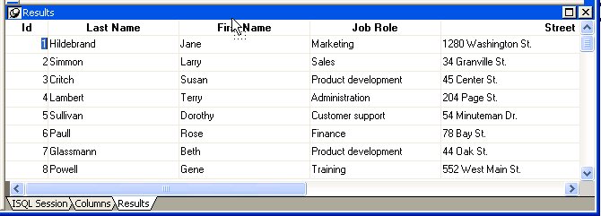
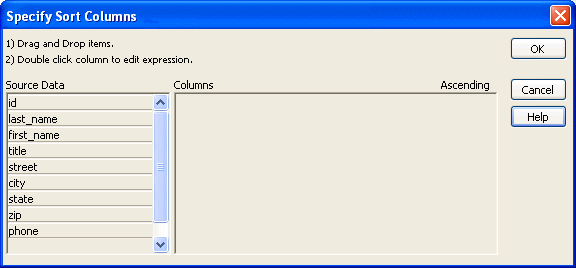
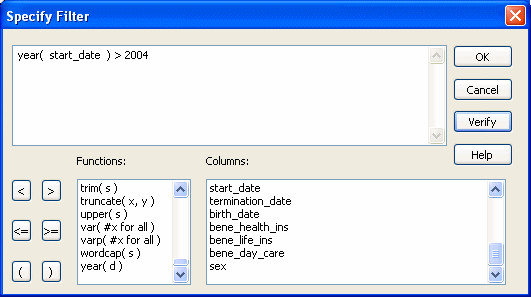

As you work on the database, you often want to look at existing data or create some data for testing purposes. You might also want to test display formats, validation rules, and edit styles on real data.
PowerBuilder provides data manipulation for such purposes. With data manipulation, you can:
 To retrieve data:
To retrieve data:
In the Database painter, select the table or database view whose data you want to manipulate.
All rows are retrieved and display in the Results view. As the rows are being retrieved, the Retrieve button changes to a Cancel button. You can click the Cancel button to stop the retrieval.
Exactly what you see in the Results view depends on the formatting style you picked. What you see is actually a DataWindow object. The formatting style you picked corresponds to a type of DataWindow object (grid, tabular, or freeform). In a grid display, you can drag the mouse on a column's border to resize the column.
This window is in the grid format:

Only a few rows of data display at a time. You can use the First, Prior, Next, and Last buttons or the pop-up menu to move from page to page.
You can add, modify, or delete rows. When you have finished manipulating the data, you can apply the changes to the database.
 If looking at data from a view Some views are logically updatable and others are not. Some
DBMSs do not allow any updating of views.
If looking at data from a view Some views are logically updatable and others are not. Some
DBMSs do not allow any updating of views.
 To modify data:
To modify data:
When you add or modify data, the data uses the validation rules, display formats, and edit styles that you or others have defined for the table in the Database painter.
Click the Save Changes button or select Rows>Update to apply changes to the database.
You can sort the data, but any sort criteria you define are for testing only and are not saved with the table or passed to the DataWindow painter.
 To sort the rows:
To sort the rows:
Select Rows>Sort from the menu bar.
The Specify Sort Columns dialog box displays.
Drag the columns you want to sort on from the Source Data box to the Columns box:

A check box with a check mark in it displays under the Ascending heading to indicate that the values will be sorted in ascending order. To sort in descending order, clear the check box.
 Precedence of sorting The order in which the columns display in the Columns box
determines the precedence of the sorting. For example, in the preceding
dialog box, rows would be sorted by department ID. Within department
ID, rows would be sorted by state.
Precedence of sorting The order in which the columns display in the Columns box
determines the precedence of the sorting. For example, in the preceding
dialog box, rows would be sorted by department ID. Within department
ID, rows would be sorted by state.
(Optional) Double-click an item in the Columns box to specify an expression to sort on.
The Modify Expression dialog box displays.
Specify the expression.
For example, if you have two columns, Revenues and Expenses, you can sort on the expression Revenues – Expenses.
Click OK to return to the Specify Sort Columns dialog box with the expression displayed.
 If you change your mind You can remove a column or expression from the sorting specification
by simply dragging it and releasing it outside the Columns box.
If you change your mind You can remove a column or expression from the sorting specification
by simply dragging it and releasing it outside the Columns box.
When you have specified all the sort columns and expressions, click OK.
You can limit which rows are displayed by defining a filter.
The filters you define are for testing only and are not saved with the table or passed to the DataWindow painter.
 To filter the rows:
To filter the rows:
Select Rows>Filter from the menu bar.
The Specify Filter dialog box displays.
Enter a boolean expression that PowerBuilder will test against each row:

If the expression evaluates to TRUE, the row is displayed. You can paste functions, columns, and operators in the expression.
Click OK.
PowerBuilder filters the data. Only rows meeting the filter criteria are displayed.
 To remove the filter:
To remove the filter:
Select Rows>Filter from the menu bar.
The Specify Filter dialog box displays, showing the current filter.
Delete the filter expression, then click OK.
 Filtered rows and updates Filtered rows are updated when you update the database.
Filtered rows and updates Filtered rows are updated when you update the database.
You can display information about the data you have retrieved.
 To display row information:
To display row information:
Select Rows>Described from the menu bar.
The Describe Rows dialog box displays showing the number of:
All row counts are zero until you retrieve the data from the database or add a new row. The count changes when you modify the displayed data or test filter criteria.
You can import data from an external source and then save the imported data in the database.
 To import data:
To import data:
Select Rows>Import from the menu bar.
The Select Import File dialog box displays.
Specify the file from which you want to import the data.
The types of files you can import into the Database painter are shown in the Files of Type drop-down list.
Click Open.
PowerBuilder reads the data from the file. You can click the Save Changes button or select Rows>Update to add the new rows to the database.
You can print the data displayed by selecting File>Print from the menu bar. Before printing, you can also preview the output on the screen.
 To preview printed output before printing:
To preview printed output before printing:
Select File>Print Preview from the menu bar.
Preview displays the data as it will print. To display rulers around the page borders in Print Preview, select File>Print Preview Rulers.
To change the magnification used in Print Preview, select File>Print Preview Zoom from the menu bar.
The Zoom dialog box displays.
Select the magnification you want and click OK.
Preview zooms in or out as appropriate.
When you have finished looking at the print layout, select File>Print Preview from the menu bar again.
You can save the displayed data in an external file.
 To save the data in an external file:
To save the data in an external file:
Select File>Save Rows As from the menu bar.
The Save Rows As dialog box displays.
Choose a format for the file.
You can select from several formats, including Powersoft report (PSR), XML, and HTML.
If you want the column headers saved in the file, select a file format that includes headers, such as Excel With Headers. When you select a with headers format, the names of the database columns (not the column labels) will also be saved in the file.
For more information, see "Saving data in an external file".
For TEXT, CSV, SQL, HTML, and DIF formats, select an encoding for the file.
You can select ANSI/DBCS, Unicode LE (Little-Endian), Unicode BE (Big-Endian), or UTF8.
Name the file and save it.
PowerBuilder saves all displayed rows in the file; all columns in the displayed rows are saved. Filtered rows are not saved.